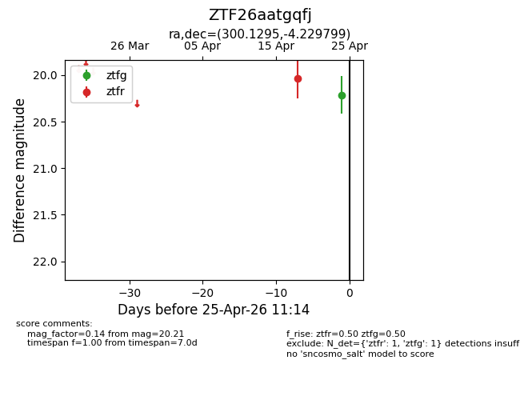
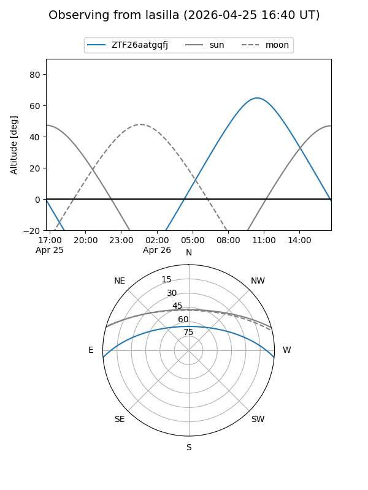
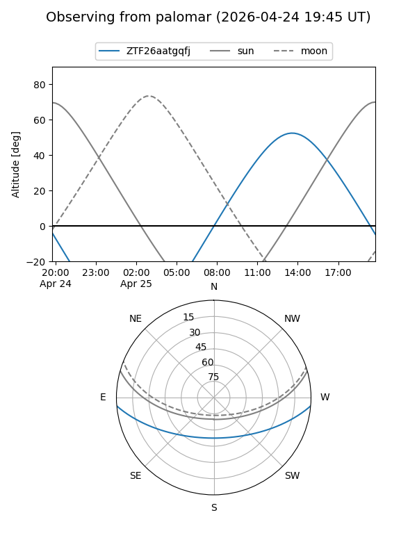
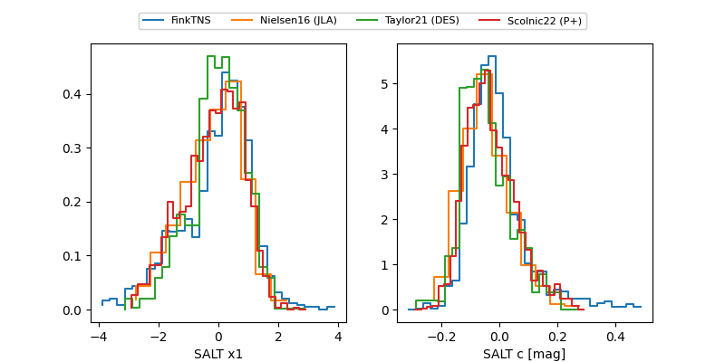

ZTF26aatgqfj
Target ZTF26aatgqfj at 2026-04-25 11:15
Aliases and brokers:
FINK: link
Lasair: link
ALeRCE: link
alt names
ZTF26aatgqfj (ztf,fink_ztf)
Coordinates:
equatorial (ra, dec) = 300.1295,-4.22980
equatorial (HMS+DMS) = 20:00:31.08,-04:13:47.28
galactic (l, b) = (37.0975,-17.28516)
Flags:
Photometry:
last ztfg=20.21, ztfr=20.04
1 ztfg, 1 ztfr detections
Lightcurve

Visibility


Additional plots
